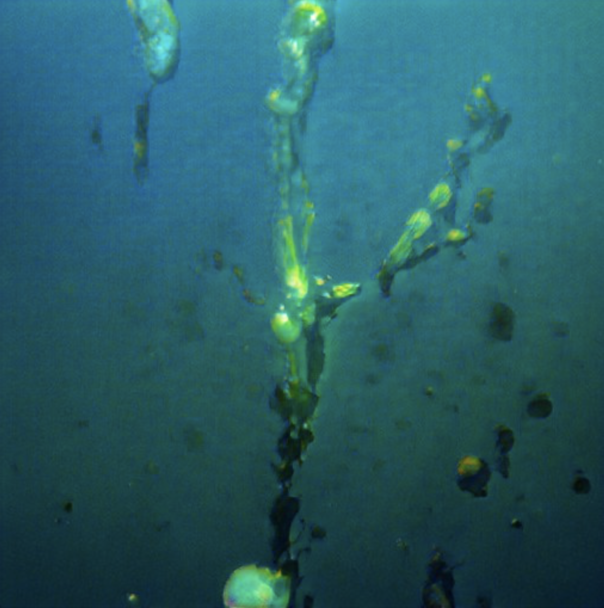
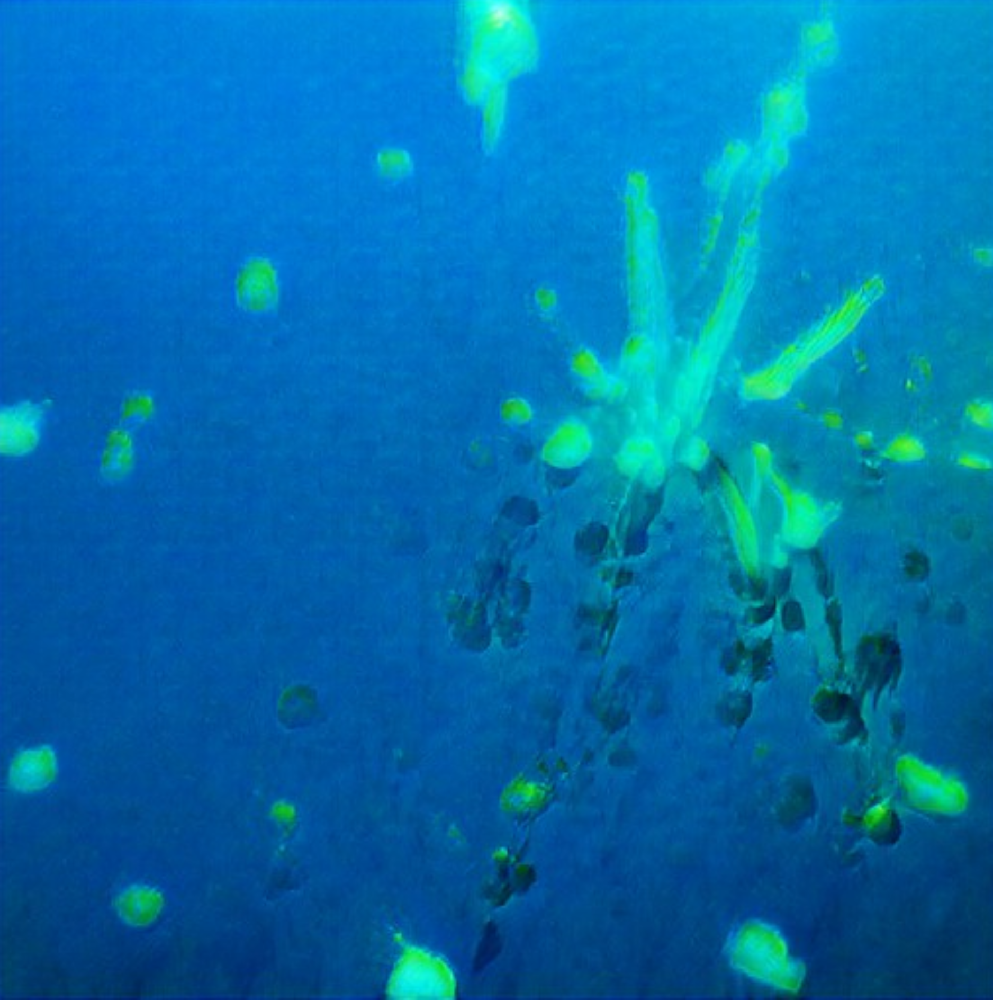
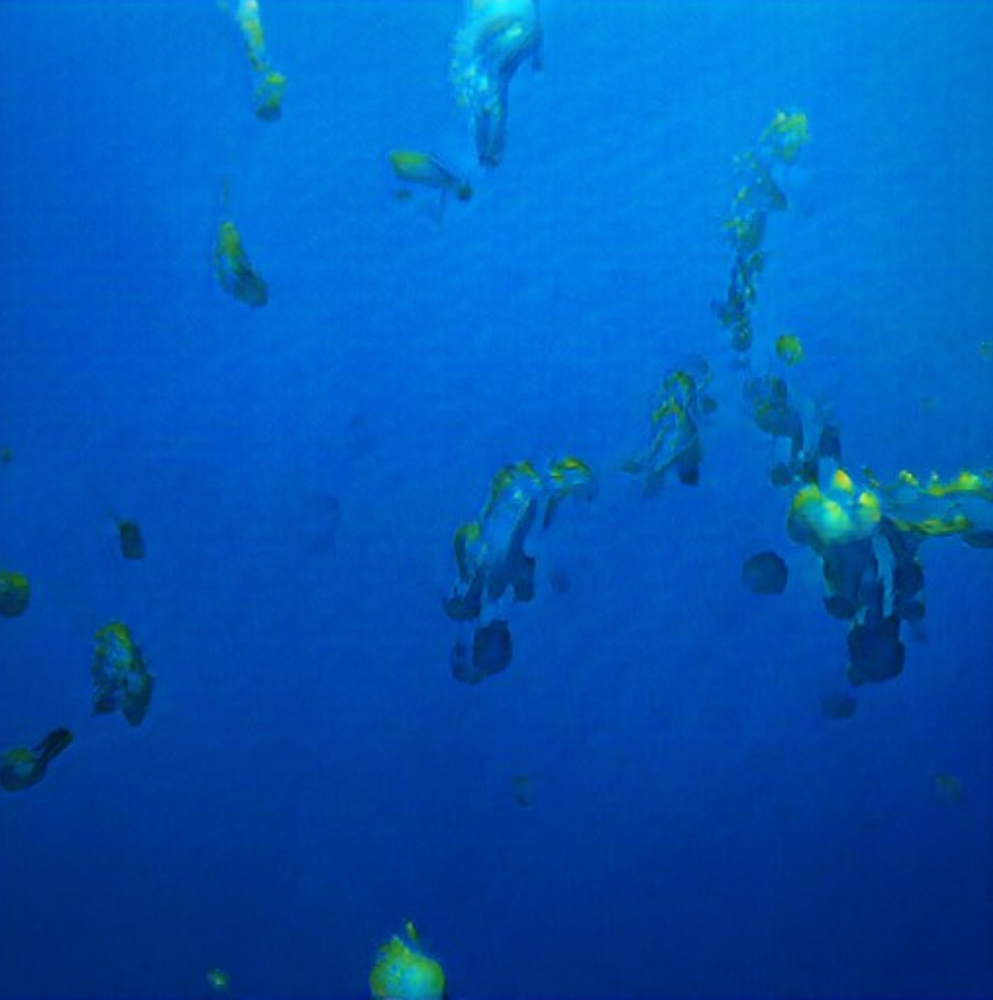
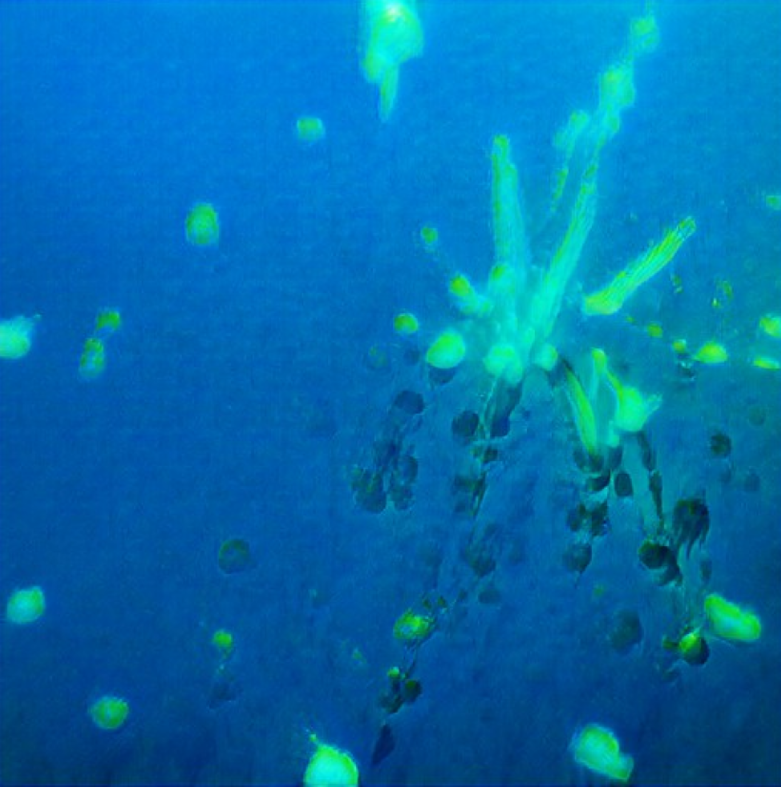
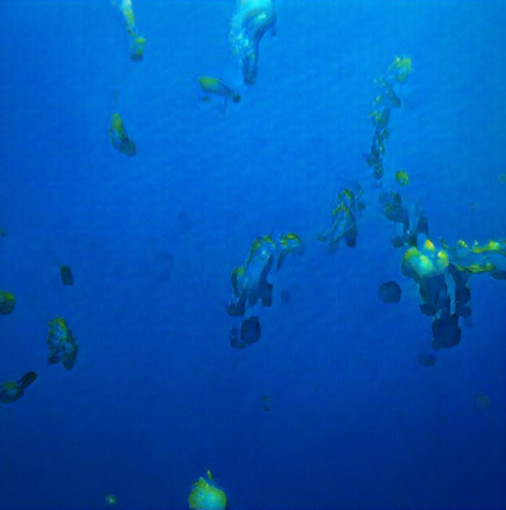

0129
Nuphar sagittifolia
Kingdom: Plantae
Clade: Tracheophytes
Clade: Angiosperms
Order: Nymphaeales
Family: Nymphaeaceae
Genus: Nuphar
Section: Nuphar sect. Astylus
Species: N. sagittifolia
Nuphar sagittifolia, common name arrow-leaved water-lily or Cape Fear spatterdock, is a plant species known only from North Carolina, South Carolina, and Virginia. It is aquatic, found in lakes, ponds, and slow-moving rivers in the coastal plains of those states. It is also sold in pet shops as greenery to grow in aquaria and water-gardens.
Nuphar sagittifolia is a perennial herb with rhizomes buried in the mud below the water. Leaf blades either float on the surface of the water or are submerged beneath it. Petioles are terete (round in cross-section). Leaves are 3-lobed and sagittate (arrow-shaped or V-shaped), the tips of the lobes sometimes rounded. Flowers are green and yellow, 2–3 cm (1–1 in) in diameter, usually held above the surface of the water.

 



Copyright 2021 by Nouveaux Specimens.
All Rights Reserved.